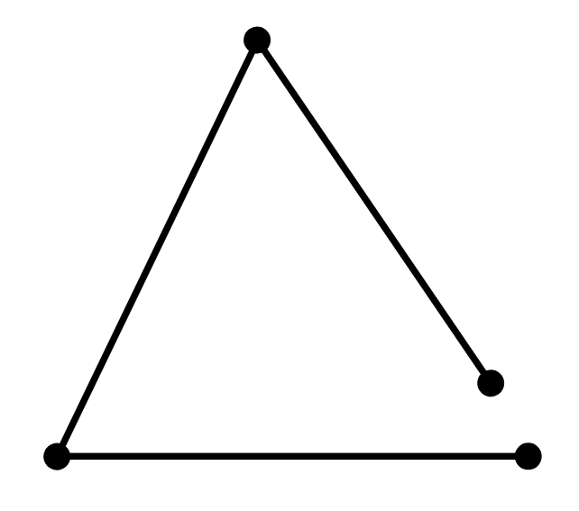
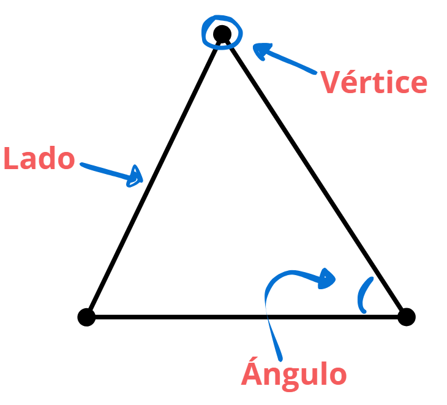
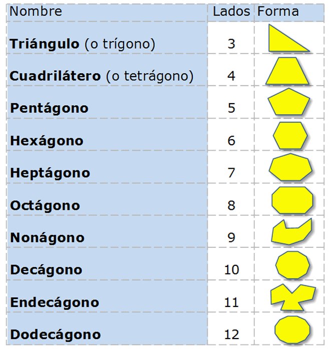

Son formas que ocupan un lugar en el espacio y están delimitadas por líneas, que pueden ser rectas o curvas. En palabras más simples, son dibujos cerrados formados por una o varias líneas. Cuando las líneas son todas rectas, esas figuras se llaman polígonos.
Importante: Si una figura no esta cerrada, no puede considerarse una figura geométrica.
Por ejemplo, lo siguiente no es una figura geométrica, porque no está cerrada:
¿Qué son los polígonos?
Los polígonos son figuras geométricas planas formadas por líneas rectas que se unen para formar un camino cerrado.
¿Cuáles son sus partes?
Las figuras geométricas tienen partes importantes que nos ayudan a describirlas y entenderlas mejor.
Vértices: Son los puntos donde se unen los lados.
Lados: Son las líneas rectas o curvas que forman el borde de la figura. Cuando dos puntos
Ángulos: Son los espacios que se forman entre dos lados que se juntan.
Cada polígono tiene un nombre diferente según la cantidad de lados (que es la misma cantidad de vértices y ángulos). Aquí te dejo una lista con los más conocidos:
1. ¿Cuál de las siguientes opciones no representa una figura geométrica?
2. ¿Cuántos lados tiene un hexágono regular?
3. En un cuadrado, ¿cómo son sus lados y ángulos?
4. Si un polígono tiene 8 lados, ¿cómo se llama?
5. ¿Cuántos vértices tiene un decágono?
6. Un polígono irregular se caracteriza por:
7. ¿Cuál es la suma de los ángulos interiores de un pentágono?
8. Si un polígono tiene una suma de ángulos interiores de 900°, ¿cuántos lados tiene?
9. En un polígono regular, cada ángulo interior mide 120°. ¿De cuántos lados es el polígono?